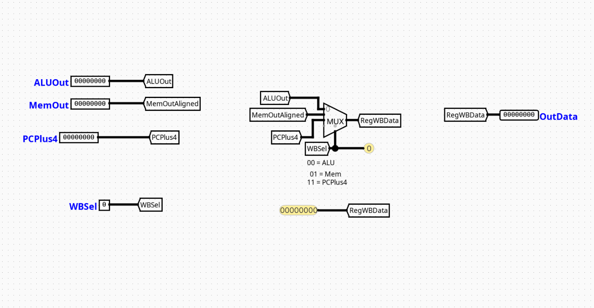

WriteBackController
Overview
The WriteBackController component handles structural routing at the final destination boundary of a pipelined RV32I processor. It functions as a data-path routing multiplexer that determines which computed result or memory payload gets committed back to the processor's Core Register File during the Writeback (WB) phase.
- Purpose in CPU: Consolidates separate asynchronous execution channels into a single synchronized register commitment path, preventing structural bus contentions.
-
Role in datapath: Positioned at the terminal boundary of the Memory/Writeback (MEM/WB) pipeline interface, collecting data payloads from the execution and storage units to feed back into the destination register write input channel (
rd). -
Source:
logisim/RiskVControl.circ
Interface
Inputs
| Signal | Width | Description |
|---|---|---|
ALUOut |
32 bits | Mathematical or logical data output forwarded from the computation unit (ALU). |
MemOut |
32 bits | Data payload read out from Random Access Data Memory (RAM) during a load operation. |
PCPlus4 |
32 bits | Incremented program counter sequence value tracking the sequential instruction pathway (PC + 4). |
WBSel |
2 bits | Structural multi-bit routing control line dictating which data stream maps to the destination register. |
Outputs
| Signal | Width | Description |
|---|---|---|
WB_Data |
32 bits | Standardized 32-bit payload routed directly to the master write data channel of the central Register File. |
Output Logic (Core Definition)
Defines how data outputs are structurally isolated and routed based on the status configuration of the tracking network lines.
Rule-based definition (preferred)
- If
WBSel=00→WB_Data=ALUOut(Routes standard computational or address generation results) - If
WBSel=01→WB_Data=MemOut(Routes memory data payloads retrieved via load commands) - If
WBSel=11→WB_Data=PCPlus4(Routes link addresses for jump-and-link operations)
Optional: Truth table (only when necessary)
WBSel Selector |
Output WB_Data Value |
Operational Intent |
|---|---|---|
00 |
ALUOut |
Register Writeback from computation (R-type, I-type arithmetic) |
01 |
MemOut |
Register Writeback from storage tracking (lw) |
10 |
Unused / Default | Reserved path |
11 |
PCPlus4 |
Return address execution recording (jal, jalr) |
Internal Design
The WriteBackController features a clean, low-latency combinational topology engineered to settle routing channels instantly within the final phase window.
- Structure: Purely combinational circuit layout containing zero clocked registers, flip-flops, or discrete state latches.
- Multiplexer Layout: Employs a single multi-bit 4-to-1 Multiplexer (
Multiplexercomponent derived from thePlexerslibrary group configured for a data tracking bit-width of 32 and a selection width of 2). - Routing Infrastructure: Directs physical terminal interfaces onto internal connection tracks via named wire labels (
Tunnels). The multiplexer extracts selection configurations via the 2-bit routing tunnelWBSelhooked directly into its control pin.
Operation
Step-by-step behavior:
- Inputs arrive: Data arrays from the ALU calculation unit (
ALUOut), memory data bus (MemOut), and sequence link path (PCPlus4) appear at the multiplexer inputs. - Decoding / selection occurs: The central control block applies a stable 2-bit state parameter directly to the
WBSelmultiplexer select lines. - Logic evaluates conditions: The combinational plexer gates establish a direct structural link between the selected input channel and the output terminal.
- Outputs are produced: The target data stream settles on the
WB_Datachannel, making it immediately available for latching into the Register File on the next active clock edge.
Pipeline Interaction
- Pipeline stage involvement: Centered strictly within the WB (Writeback) stage environment.
- Signal propagation across stages: Monitors signals latched across the MEM/WB pipeline registers to convert them into a stable return stream.
- Dependencies: Operates downstream of the main control distribution architecture; relies on the system controller to decode the active instruction type and maintain stable
WBSelvalues across the execution window.
Examples
Example: Memory Load Return (e.g., lw x10, 0(x5))
Inputs:
ALUOut=0x200000A0(Computed data storage address)MemOut=0xABCDEF12(Actual value read from RAM at that address)PCPlus4=0x00000044WBSel=01
Outputs:
WB_Data=0xABCDEF12(Routes the data read from memory back to registerx10)
Limitations / Assumptions
- Assumes that data sign-extension or byte-alignment handling for memory operations has already been computed by processing blocks upstream.
- Purely combinational logic structure; does not include built-in timing elements or data holding latches.
- Relies entirely on the external control system to avoid configuring the module into unmapped or invalid states (e.g., state
10).
Implementation Notes
- Built using native Logisim
PlexersandWiringcomponents. - Configured strictly using standard multi-bit bus lines matching standard RV32I design specifications.
- Implements organized local tunnel networks to avoid overlapping signal lines and trace clutter.